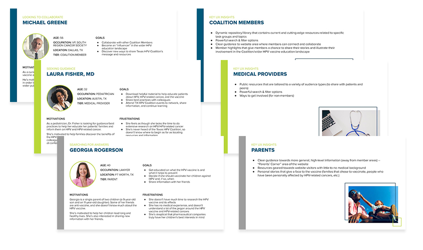
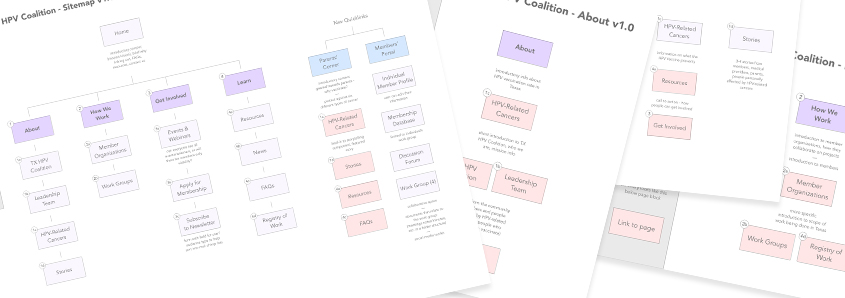
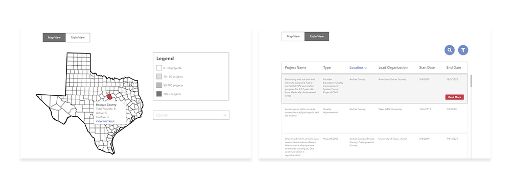

The Texas HPV Coalition has a large aim: raising HPV vaccination rates in one of the biggest states in the country. They approached my agency looking for a web presence that would appeal to Coalition members and non-members alike.
To kick off this expansive project, I led an in-depth UX discovery and research process that included a competitive analysis, a Google Analytics deep-dive on an affiliate's website, in-depth conversations with stakeholders, and fleshed-out user personas. Through these user personas, I drew some key insights that would inform further stages of the design process.
Due to the Texas HPV Coaliton's vast and varied stakeholders, I set out to create a website with clear channels for different audience types. Using the user personas as a guide, I created a comprehensive sitemap that would accommodate medical providers, researchers, curious parents, and active members.
Using Adobe XD, I jumped off from the sitemap and created a full set of wireframes for the Coalition's website.
The most ambitious aspect of this project is slated for phase two of the website: a comprehensive catalog of research projects happening across the state of Texas. To prepare for this second phase, I created an interactive wireframe prototype for the Coalition's internal review and testing.
With a condensed timeframe for site launch, I designed homepage desktop and mobile mockups along with a fleshed-out components library to hand off to our developers for the internal pages.
The Texas HPV Coalition had one of the most varied user bases I've ever designed for. From parents looking for information to help guide their decisions for their children's health to medical researchers looking for projects around the state, I had to juggle a large set of goals for the site. By starting the process off with user personas, I was able to have a clear idea of the users' needs prior to delving in to the site architecture.
This project had a short turnaround, so I learned to meet with our dev team early and often. We worked together on a components library, determining what needed design guidance, what interactions needed to occur, and what I could leave up to the engineers.